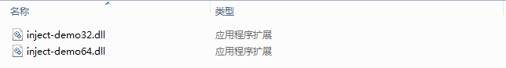
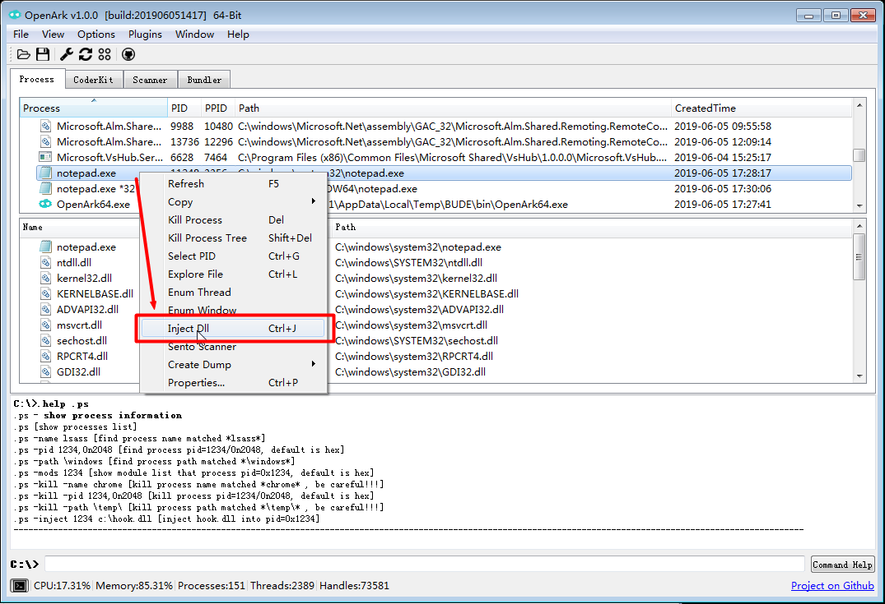
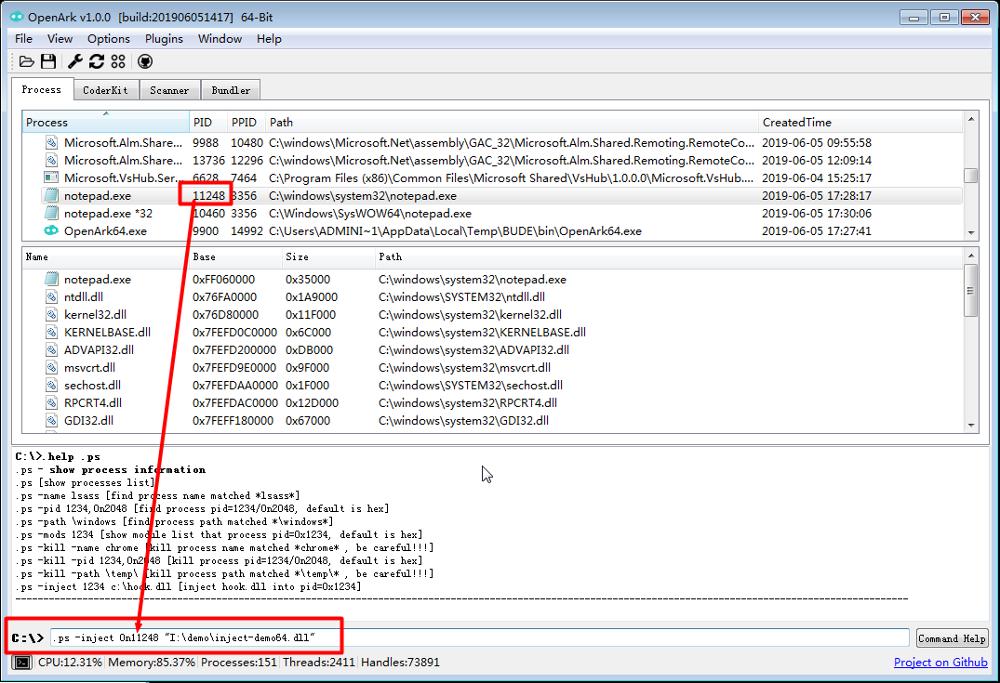
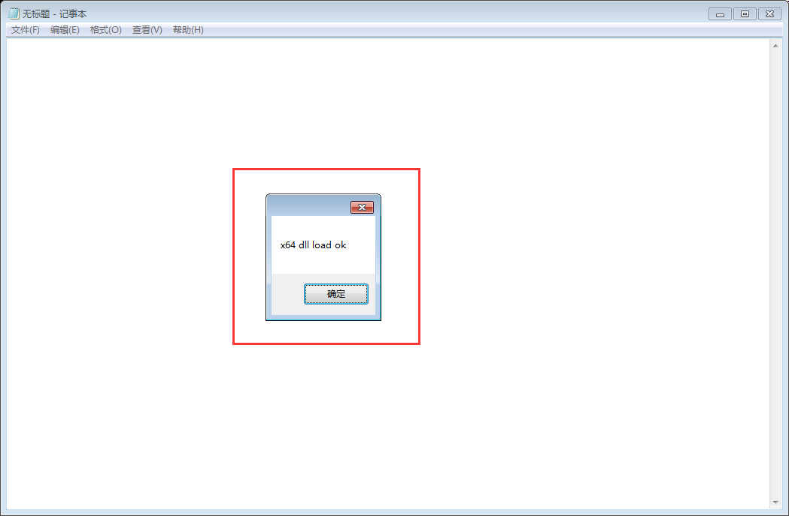

注入Dll到进程
创建进程
- 打开64位计算器：C:/windows/system32/notepad.exe
- 打开32位计算器：C:/windows/SysWOW64/notepad.exe
刷新进程列表能看到两个，*32 代表32位进程，反之。
编译测试Dll
- 选择平台，分别编译64位(x64)和x86(32位)
- 得到inject-demo.dll，可用OpenArk的FileScanner查看位数

// dll inject demo source code
#include <Windows.h>
BOOL APIENTRY DllMain( HMODULE hModule,
DWORD ul_reason_for_call,
LPVOID lpReserved )
{
switch (ul_reason_for_call) {
case DLL_PROCESS_ATTACH: {
#ifdef _AMD64_
// 64-bit dll
MessageBoxW(NULL, L"x64 dll load ok", L"", MB_OK);
#else
// 32-bit dll
MessageBoxW(NULL, L"x86 dll load ok", L"", MB_OK);
#endif
// current process exit
exit(1);
break;
}
case DLL_THREAD_ATTACH:
case DLL_THREAD_DETACH:
case DLL_PROCESS_DETACH:
break;
}
return TRUE;
}
注入进程
- 找到要注入的进程，例如注入64位模块到notepad.exe进程。
-
可直接在进程右键菜单中选择 Inject Dll， 或者使用快捷键Ctrl + J 
-
当然，也可以使用命令来注入，进程ID用十进制表示，需要前缀0n，如下图所示： 
-
注入成功后Console Window也会输出日志：
[+] inject pid:11248 path:"I:\demo\inject-demo64.dll" ok
- Dll注入成功：

- 点击确定后，Dll会调用exit函数，记事本进程会自动退出。
总结
- 本文讲解了如何使用OpenArk实现了32位、64位进程注入。
- 一般地，使用32位Dll注入32位进程，64位Dll注入64位进程，如需了解更多，可搜索Windows WOW64机制。